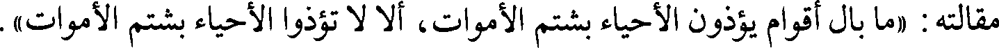
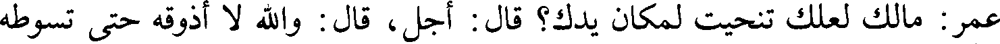
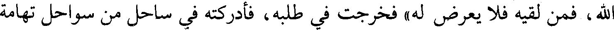

File: 000881.gt.txt (if the image is defective, simply delete all Arabic text and the line will be excluded)

/ جرت الرياح على محل ديارهم فكأنما كانوا على ميعاد 81/أ
File: 000882.gt.txt (if the image is defective, simply delete all Arabic text and the line will be excluded)

وإذا النعيم وكل ما يلهى به يوما يصير إلى بلى ونفاذ
File: 000883.gt.txt (if the image is defective, simply delete all Arabic text and the line will be excluded)

فقال علي رضي الله عنه : لا تقل هكذا، ولكن قل [كما قال الله عز وجل](2) :
File: 000884.gt.txt (if the image is defective, simply delete all Arabic text and the line will be excluded)

وأورثناها] قوما آخرين)(3) . إن هؤلاء [القوم] كانوا وارثين فأصبحوا موروثين، وإن
File: 000885.gt.txt (if the image is defective, simply delete all Arabic text and the line will be excluded)

هؤلاء [القوم] استحلوا الحرام فحلت بهم النقم [فلا تستحلوا الحرام فتحل بكم
File: 000886.gt.txt (if the image is defective, simply delete all Arabic text and the line will be excluded)

قال : أخبرنا علي بن محمد بن عبد الله المعدل، أخبرنا عثمان بن أحمد الدقاق، حدثنا
File: 000887.gt.txt (if the image is defective, simply delete all Arabic text and the line will be excluded)

محمد بن أحمد بن البراء(4)، أخبرنا القاسم بن أبي شيبة، حدثنا حفص بن غياث، عن
File: 000888.gt.txt (if the image is defective, simply delete all Arabic text and the line will be excluded)

الشيباني، عن أبي عون](5)، عن السائب بن الأقرع(6) :
File: 000889.gt.txt (if the image is defective, simply delete all Arabic text and the line will be excluded)

أنه كان جالسا في إيوان كسرى(7)، فنظر إلى تمثال يشير بأصبعه إلى موضع قال :
File: 000890.gt.txt (if the image is defective, simply delete all Arabic text and the line will be excluded)

فوقع في روعي أنه يشير إلى كنز، قال : فاحتفرت ذلك الموضع، فاستخرجت كنزا
File: 000891.gt.txt (if the image is defective, simply delete all Arabic text and the line will be excluded)

عظيما، فكتبت إلى عمر أخبره، فكتب إن هذا شيء أفاءه الله عليه دون المسلمين.
File: 000892.gt.txt (if the image is defective, simply delete all Arabic text and the line will be excluded)

قال فكتب إليه عمر: إنك أمير من أمراء المسلمين، فاقسمه بين المسلمين.
File: 000893.gt.txt (if the image is defective, simply delete all Arabic text and the line will be excluded)

157
File: 000894.gt.txt (if the image is defective, simply delete all Arabic text and the line will be excluded)

سنة 13
File: 000895.gt.txt (if the image is defective, simply delete all Arabic text and the line will be excluded)

المهاجر»، قلت : يا رسول الله، لا أدع نفقة أنفقتها عليك إلا أنفقت مثلها في سبيل الله.
File: 000896.gt.txt (if the image is defective, simply delete all Arabic text and the line will be excluded)

المخزومي، قال : قال شيخ لنا :
File: 000897.gt.txt (if the image is defective, simply delete all Arabic text and the line will be excluded)

لما قدم عكرمة المدينة جعل الناس يتنادون : هذا ابن أبي جهل، هذا ابن أبي
File: 000898.gt.txt (if the image is defective, simply delete all Arabic text and the line will be excluded)

جهل، فانطلق موايلا حتى دخل على أم سلمة زوجة النبي صلعم، فقالت له : ما شأنك؟
File: 000899.gt.txt (if the image is defective, simply delete all Arabic text and the line will be excluded)

قال : ما شأني، لا أخرج إلى طريق ولا سوق إلا ينادى بي : هذا ابن أبي جهل، فدخل
File: 000900.gt.txt (if the image is defective, simply delete all Arabic text and the line will be excluded)

رسول الله صلعم / في خلال ذلك، فذكرت له أم سلمة ذلك، فقال رسول الله صلعم في 58/ب
File: 000901.gt.txt (if the image is defective, simply delete all Arabic text and the line will be excluded)

مقالته : «ما بال أقوام يؤذون الأحياء بشتم الأموات، ألا لا تؤذوا الأحياء بشتم الأموات».
File: 000902.gt.txt (if the image is defective, simply delete all Arabic text and the line will be excluded)

أن عكرمة بن أبي جهل كان إذا أجهد اليمين، قال : لا والذي نجاتي يوم بدر،
File: 000903.gt.txt (if the image is defective, simply delete all Arabic text and the line will be excluded)

وكان يضع المصحف على وجهه ويقول : كتاب ربي كتاب ربي.
File: 000904.gt.txt (if the image is defective, simply delete all Arabic text and the line will be excluded)

169 - عتاب بن أسيد:
File: 000905.gt.txt (if the image is defective, simply delete all Arabic text and the line will be excluded)

ولاه رسول الله صلعم مكة وهو ابن خمس وعشرين سنة، وتوفي بها يوم مات أبو بكر
File: 000906.gt.txt (if the image is defective, simply delete all Arabic text and the line will be excluded)

بالمدينة، وكانا قد سما جميعا.
File: 000907.gt.txt (if the image is defective, simply delete all Arabic text and the line will be excluded)

170 - نعيم النحام بن عبد الله بن أسيد بن عبد عوف(3):
File: 000908.gt.txt (if the image is defective, simply delete all Arabic text and the line will be excluded)

أسلم بعد عشرة، وكان يكتم إسلامه، وإنما سمي النحام لأن رسول الله صلعم قال :
File: 000909.gt.txt (if the image is defective, simply delete all Arabic text and the line will be excluded)

«دخلت الجنة فسمعت نحمة من نعيم» .
File: 000910.gt.txt (if the image is defective, simply delete all Arabic text and the line will be excluded)

ولم يزل بمكة يحوطه قومه [لشرفه فيهم. فلما هاجر المسلمون إلى المدينة أراد
File: 000911.gt.txt (if the image is defective, simply delete all Arabic text and the line will be excluded)

الهجرة، فتعلق به قومه](4) فقالوا : دن بأي دين شئت وأقم عندنا. فأقام [بمكة](5) إلى
File: 000913.gt.txt (if the image is defective, simply delete all Arabic text and the line will be excluded)

سنة 13
File: 000914.gt.txt (if the image is defective, simply delete all Arabic text and the line will be excluded)

فبينا هو عند عمر بن الخطاب رضي الله عنه إذ أتي بطعام فتنحى عنه، فقال
File: 000915.gt.txt (if the image is defective, simply delete all Arabic text and the line will be excluded)

عمر : مالك لعلك تنحيت لمكان يدك؟ قال : أجل، قال : والله لا أذوقه حتى تسوطه
File: 000916.gt.txt (if the image is defective, simply delete all Arabic text and the line will be excluded)

بيدك، فوالله ما في القوم أحد بعضه في الجنة غيرك. ثم خرج عام اليرموك في خلافة
File: 000917.gt.txt (if the image is defective, simply delete all Arabic text and the line will be excluded)

عمر بن الخطاب رضي الله عنه فقتل شهيدا.
File: 000918.gt.txt (if the image is defective, simply delete all Arabic text and the line will be excluded)

167-[عبد الله خليفة رسول الله صلعم، أبو بكر الصديق رضي الله عنه :
File: 000919.gt.txt (if the image is defective, simply delete all Arabic text and the line will be excluded)

وقد سبق ذكر موته، توفي في هذه السنة](1).
File: 000920.gt.txt (if the image is defective, simply delete all Arabic text and the line will be excluded)

168 - عكرمة بن أبي جهل ، واسمه عمرو بن هشام بن المغيرة بن عبد الله بن عمر بن
File: 000921.gt.txt (if the image is defective, simply delete all Arabic text and the line will be excluded)

[أخبرنا ابن أبي طاهر، قال : أخبرنا الجوهري، قال : أخبرنا ابن حيوية، قال :
File: 000922.gt.txt (if the image is defective, simply delete all Arabic text and the line will be excluded)

أخبرنا أحمد بن معروف، قال : أخبرنا الحسين بن الفهم، قال : حدثنا محمد بن سعد،
File: 000923.gt.txt (if the image is defective, simply delete all Arabic text and the line will be excluded)

قال : أخبرنا محمد بن عمر، قال : حدثني أبو بكر بن عبد الله بن أبي سبرة، عن
File: 000924.gt.txt (if the image is defective, simply delete all Arabic text and the line will be excluded)

موسى بن عقبة، عن أبي حبيبة مولى الزبير](2) عن عبد الله بن الزبير، قال :
File: 000925.gt.txt (if the image is defective, simply delete all Arabic text and the line will be excluded)

لما كان يوم فتح مكة هرب عكرمة بن أبي جهل إلى اليمن، وخاف أن يقتله رسول
File: 000926.gt.txt (if the image is defective, simply delete all Arabic text and the line will be excluded)

الله صلعم، [فجاءت زوجته إلى رسول الله صلعم](3) / وكانت امرأته أم حليم بنت 57/ب
File: 000927.gt.txt (if the image is defective, simply delete all Arabic text and the line will be excluded)

الحارث بن هشام امرأة لها عقل، وكانت قد اتبعت رسول الله صلعم، فقالت له : إن ابن
File: 000928.gt.txt (if the image is defective, simply delete all Arabic text and the line will be excluded)

عمي عكرمة قد هرب منك [إلى اليمن]، وخاف أن تقتله فأمنه، قال : «قد أمنته بأمان
File: 000929.gt.txt (if the image is defective, simply delete all Arabic text and the line will be excluded)

الله، فمن لقيه فلا يعرض له» فخرجت في طلبه، فأدركته في ساحل من سواحل تهامة
File: 000930.gt.txt (if the image is defective, simply delete all Arabic text and the line will be excluded)

وقد ركب البحر، فجعلت تلوح إليه وتقول : يا بن عم، جئتك من عند أوصل الناس،
File: 000931.gt.txt (if the image is defective, simply delete all Arabic text and the line will be excluded)

وأبر الناس، وخير الناس، لا تهلك نفسك وقد استأمنت لك فأمنك، فقال : أنت فعلت